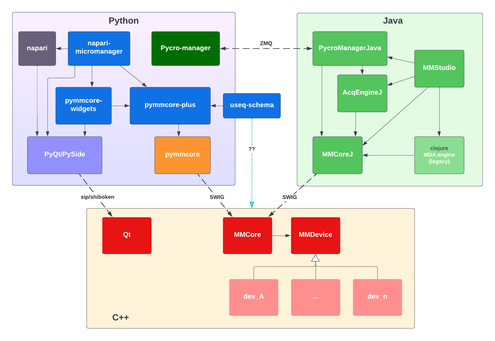

Overview#
pymmcore-plus aims to extend
pymmcore (python bindings for the
C++ micro-manager core)
with a number of features designed to facilitate working with Micro-manager in
pure python/C environments.
-
pymmcore-plusitself is a superset ofpymmcore(python bindings for Micro-manager's C++CMMCore).pymmcore_plus.CMMCorePlus(the main object in this library) aims to be a drop-in replacement forpymmcore.CMMCore, while adding a number of additional features including:- A multi-dimensional acquisition engine implemented in pure python. (The existing acquisition engines in Micro-manager are written in Java and Clojure).
- More flexible event connections and callback handling.
- Extended convenience APIs for working with core (which would be hard or
impossible to implement in the
pymmcoreSWIG wrapper). - More pythonic APIs for various pymmcore objects (e.g.
pymmcore_plus.Device,pymmcore_plus.Configuration) and constants.
-
pymmcore-widgetsis a Qt-based widget library built onpymmcore-plusthat provides GUI elements for most of the device and acquisition functionality ofpymmcore. It allows users to build their own custom GUIs for Micro-manager. napari-micromanageris a plugin for the napari image viewer that composespymmcore-plusandpymmcore-widgetsto provide a full GUI for Micro-manager that is integrated with the napari viewer.
How is pymmcore-plus different than Pycro-Manager?
A common question about pymmcore-plus and related libraries is how it
differs from Pycro-Manager,
another python library written by Henry Pinkard for working with Micro-manager.
The two projects are not mutually exclusive! They aim to support different use cases
The primary difference is that Pycro-Manager controls Micro-manager via a ZMQ-based connection to a remote Java process in which the Micro-manager GUI is running (or a headless Java process if the GUI is not running). The Java process in turn communicates with the C++ core driving the hardware.
pymmcore-plus aims to remove the need for a Java process by communicating
directly with the C++ core (via the
pymmcore library), and
re-implementing any necessary event-based or GUI-based functionality in pure
python or C.
A major advantage of Pycro-Manager is that you get the entire Java-based micro-manager ecosystem, including the GUI and plugins. A potential disadvantage (depending on your needs), is that it requires a Java runtime environment and cross-process communication.
If you are looking to control a microscope via python without any need for Java
or interprocess communication, pymmcore(-plus) may help. Note however, that
you will be sacrificing the MMStudio GUI! See pymmcore-widgets and
napari-micromanager, and pymmcore-gui for ongoing efforts to implement a
complete python-based GUI for Micro-manager.

Quickstart#
Install#
Install with pip or conda:
pip install pymmcore-plus
# OR, to include the `mmcore` command line tool
pip install "pymmcore-plus[cli]"
# OR
conda install -c conda-forge pymmcore-plus
You will also need the micro-manager device adapters on your system.
To get them quickly, assuming you have installed with pymmcore-plus[cli],
you can run:
mmcore install
See install for more details.
Usage#
The main object is pymmcore_plus.CMMCorePlus, which is an enhanced subclass
of pymmcore.CMMCore:
from pymmcore_plus import CMMCorePlus
# instantiate as you would pymmcore.CMMCore
mmc = CMMCorePlus()
# OR: use the global singleton
# mmc = CMMCorePlus.instance()
# without arguments, this will load the demo config
mmc.loadSystemConfiguration()
See the CMMCorePlus API documentation for details on
the additional features of CMMCorePlus.
CMMCorePlus.instance
Creating/accessing a CMMCorePlus object using
CMMCorePlus.instance() is a
convenient way to access the same core instance from multiple places in your
code. All widgets in
pymmcore-widgets also use
CMMCorePlus.instance() by default, so any widgets you use will automatically
connect to the same core instance without any additional configuration.
Attempts are made to make it thread-safe. But please open an issue if you find any problems.
While you can easily use pymmcore-plus from a script or IPython/Jupyter you can
also use it in combination with the napari based gui
napari-micromanager.
See using with napari-micromanager for an
example of how to use them together.
Contributing#
We welcome contributions to pymmcore-plus and related libraries. Please see
contributing for more information.